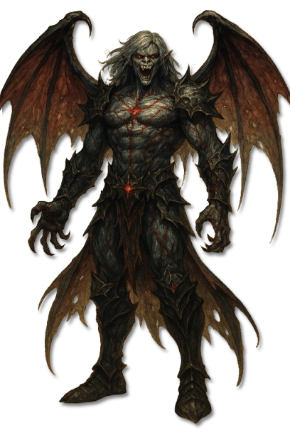
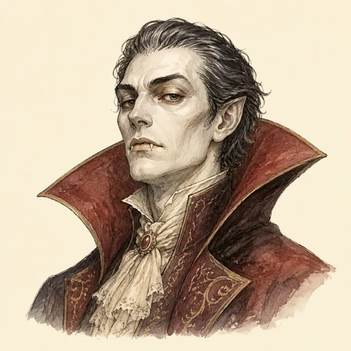
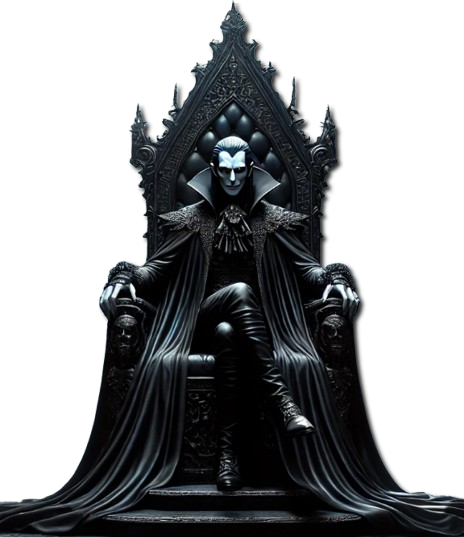

Höchste bekannte Rangstufe
Vampirfürst
Eine mächtige Erweiterung von Bhaals Willen; ein eigenes Dossier ist noch nicht überliefert.

KreaturenarchivAleria und infernale Sphären · Bhaals finstere Ordnung · Archivblatt IV / 03
Blutgebundene Schöpfungen Bhaals und ihre Sprossformen
Vampire sind direkte Schöpfungen Bhaals und Werkzeuge seiner Gier nach Blut, Seelen und Kontrolle. Ihre Ordnung reicht von uralten Fürsten bis zu verborgenen Jägern und niederen Blutsaugern; Rang, Entstehung und Lebensweise bestimmen, ob rohe Herrschaft, gesellschaftliche Täuschung oder stiller Verfall ihre größte Gefahr bildet.

„Erkenne zuerst die Gattung, ehe du die Waffe hebst; beim Vampir entscheidet nicht allein das Blut, sondern die Form seiner Bindung an Bhaal.“Grundsatz der thalenorischen Vampirkunde
Sechs Merkmale · Skala 1–10
Die vampirischen Gattungen unterscheiden sich stark. Die gemeinsame Bewertung zeigt jene Kräfte und Bindungen, die Bhaals Ordnung über mehrere Stufen hinweg prägen.
Quelle der Einordnung: Aus Rangordnung, Blutmagie, Polymorphie, gesellschaftlicher Tarnung und den wiederkehrenden Schwächen gegen sakrale Kräfte und Sonnenlicht abgeleitet
Bhaals blutgebundene Ordnung
Die Darstellung folgt dem überlieferten Rang: Der Vampirfürst steht allein an der Spitze. Höhere Vampire bilden die eigentlichen Gattungen, die geborene Striga steht als Mischwesen darunter und erst anschließend führen die infizierten Sprosse in ihre eigene Blutsauger-Untersektion.
Reine und erhobene Gattungen
Nosferat, Mula, Alp und Nachzehrer sind benannt. Neun weitere Plätze der alten Gattungsordnung bleiben offen.
Vampirgattung Bhaals
Nosferat sind die ältesten und reinsten Vampire Bhaals.
Vampirgattung Bhaals
Mulen sind anmutige, menschenähnliche Vampire, deren scheue Zurückhaltung eine gefährliche Lockjägerin verbirgt.
Vampirgattung Bhaals
Alpe sind die raffiniertesten Gesellschaftstäuscher unter Bhaals Vampiren.
Vampirgattung Bhaals
Nachzehrer sind hagere, zurückgezogene Vampire mit einer Vorliebe für verwesendes Blut und Fleisch.
???
Noch keine gesicherte Überlieferung.
???
Noch keine gesicherte Überlieferung.
???
Noch keine gesicherte Überlieferung.
???
Noch keine gesicherte Überlieferung.
???
Noch keine gesicherte Überlieferung.
???
Noch keine gesicherte Überlieferung.
???
Noch keine gesicherte Überlieferung.
???
Noch keine gesicherte Überlieferung.
???
Noch keine gesicherte Überlieferung.
Geborenes Mischwesen
Die Striga entsteht aus Mensch und Vampir und steht deshalb zwischen den höheren Gattungen und den durch Infektion geschaffenen Sprossen.
Niedere infizierte Sprosse
Der eigene Eintrag führt zur Untersektion mit Mulinar, Alpyr, Nosphyr und Mortis.
Vampire sind direkte Schöpfungen Bhaals und verkörpern seine Verderbnis, seinen Hunger nach Blut und Seelen sowie den Drang nach vollständiger Kontrolle. Vampirähnliche Wesen anderer infernaler Herren teilen einzelne Merkmale, gelten aber nicht als reine Vertreter dieser Ordnung.
Sterbliche Seelen werden in Bhaals Domäne über lange Zeit gebrochen und umgeformt. Manche beginnen als Blutling oder Bhalgar; besonders grausame und widerstandsfähige Seelen steigen auf, bis Bhaal selbst oder ein mächtiger Vampir sie erhebt und endgültig an seine Hierarchie bindet.
Vampirfürsten bilden die mächtigsten Erweiterungen von Bhaals Willen. Nosferat herrschen offen oder durch Vasallen, Mula jagen zurückgezogen, Alpe verbergen sich in Gesellschaften, Nachzehrer leben vom Verfall und Striga stehen als geborene Mischwesen außerhalb der üblichen Erhebung.
Blutsauger bilden eine eigene Untersektion unterhalb der geborenen Striga. Sie entstehen durch die gattungsspezifische Infektion eines Sterblichen: Nosphyr als Spross der Nosferat, Mulinar der Mula, Alpyr der Alpe und Mortis der Nachzehrer.
Ihre gemeinsame Übersicht ordnet Virus, Wandlungsprozess und Stellung innerhalb der vampirischen Hierarchie, bevor die einzelnen Sprossdossiers folgen.
Die Gattung muss vor dem Angriff erkannt werden. Niedere Blutsauger können körperlich überwältigt werden, während Fürsten und Nosferat sakrale Magie, geweihte Waffen und den Bruch ihrer magischen Bindungen verlangen. Sonnenlicht, die Zerstörung von Herz oder Kopf und göttliche Kräfte bleiben verbreitete Mittel, gelten aber nicht bei jeder Mischform gleich.
Ein Alp muss zuerst enttarnt, eine Mula von ihren Opfern getrennt und ein Nachzehrer an den Spuren des Verfalls erkannt werden. Striga besitzen keine klassische Sonnenfessel; bei ihnen entscheidet zudem der erhaltene Anteil menschlicher Selbstbestimmung über Gefahr und mögliche Verständigung.